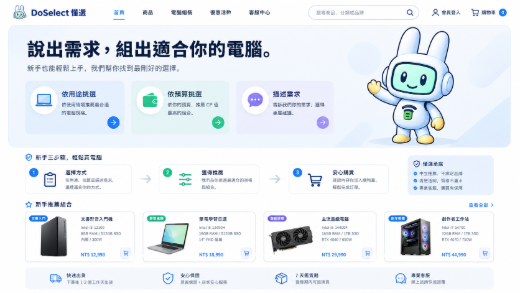
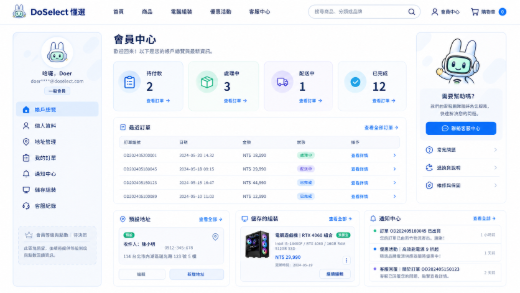
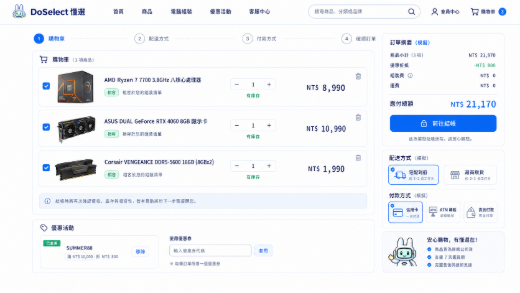
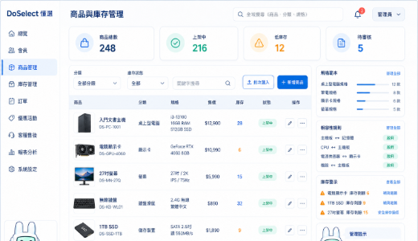
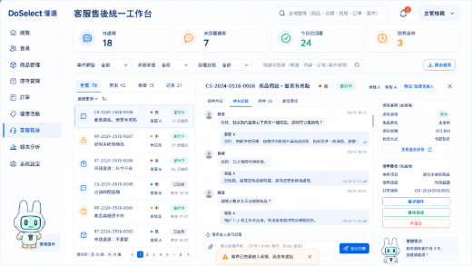
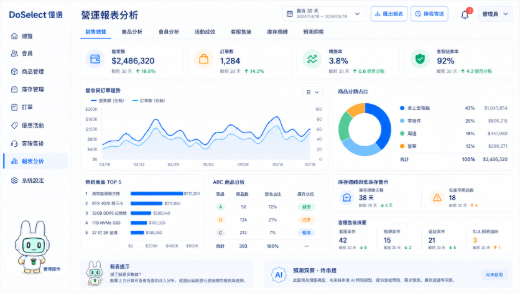

DoSelect 第一版 UI 預覽 —— 唯讀 contact sheet
來源：D:\期末小組電商網站\DoSelect_全組第一版UI預覽_2026-08-27（6 張，唯讀，未修改任何原始檔）。
這六張是本輪唯一的正式視覺基準；縮圖僅供對照，色彩取樣一律以原始檔為準。

01_前台首頁與新手導購.png
1672×941 · 1350 KB
對應 production：Customer 首頁 / Hero / 三步驟導購 / 六個分類入口 / CTA + Donggu 區
/

02_會員中心與訂單.png
1672×941 · 1221 KB
對應 production：會員資料 / 訂單列表與詳細 / 我的評價 / 售後入口 / 會員空狀態
/account/reviews、/support

03_活動購物車與結帳.png
1672×941 · 1127 KB
對應 production：購物車 / 優惠活動 / 結帳流程 / 訂單摘要 / 配送與付款步驟
/cart

04_商品與庫存管理後台.png
1536×1024 · 1357 KB
對應 production：Admin 商品列表與編輯 / SKU / 品牌分類標籤 / 庫存管理 / Sidebar
/admin/products、/admin/catalog/lookups

05_客服檢舉退貨工作台.png
1672×941 · 1336 KB
對應 production：客服案件列表與詳細 / 2:3 分割工作台 / 退貨 / 檢舉 / SLA 逾時
/support/tickets、/admin/cases、/admin/returns

06_營運報表分析後台.png
1672×941 · 1318 KB
對應 production：營運報表 / AI 用量 / Dashboard 指標 / 圖表與摘要卡片
/admin/reports/*、/admin/ai/usage